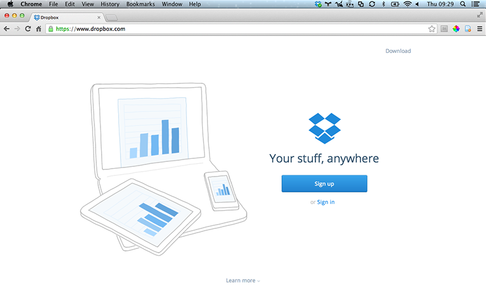

Dropbox
Store & Share

What is Dropbox?
Dropbox is a file hosting service that offers cloud storage, file synchronisation, and client software. Dropbox allows users to create a special folder on each of their computers, which Dropbox then synchronises so that it appears to be the same folder (with the same contents) regardless of which computer is used to view it. Files placed in this folder also are accessible through a website and mobile phone applications.
First Steps
- Go to Dropbox
- Fill in the form and confirm your details via email.
Features
- Starting at 2 GB for free and up to 18 GB with referrals.
- Your files are always available from the secure Dropbox website.
- See other people's changes instantly.
- Create photo galleries viewable by anyone you choose.
- Send a link to any file or folder in your Dropbox.
- Edit files in your Dropbox from your phone.
- Dropbox keeps a one-month history of your work.
How to share
- Sign in to the Dropbox website.
- Go to your list of files and folders and select the folder you want to share by clicking on the empty space to the right of the folder's name. (Clicking on the folder name or icon will open the folder instead.)
- If the folder is currently unshared, click Invite to folder in the toolbar.
- If the folder is already being shared, click Shared folder options.
- Enter the email addresses of the people you want to invite.
- Add a personal message if you'd like and click Share folder.
You can also invite people to folders from the Sharing page. To create a new shared folder, click the New shared folder button at the top of the page. To invite more people to an existing shared folder, find it in the list and click its Options link.